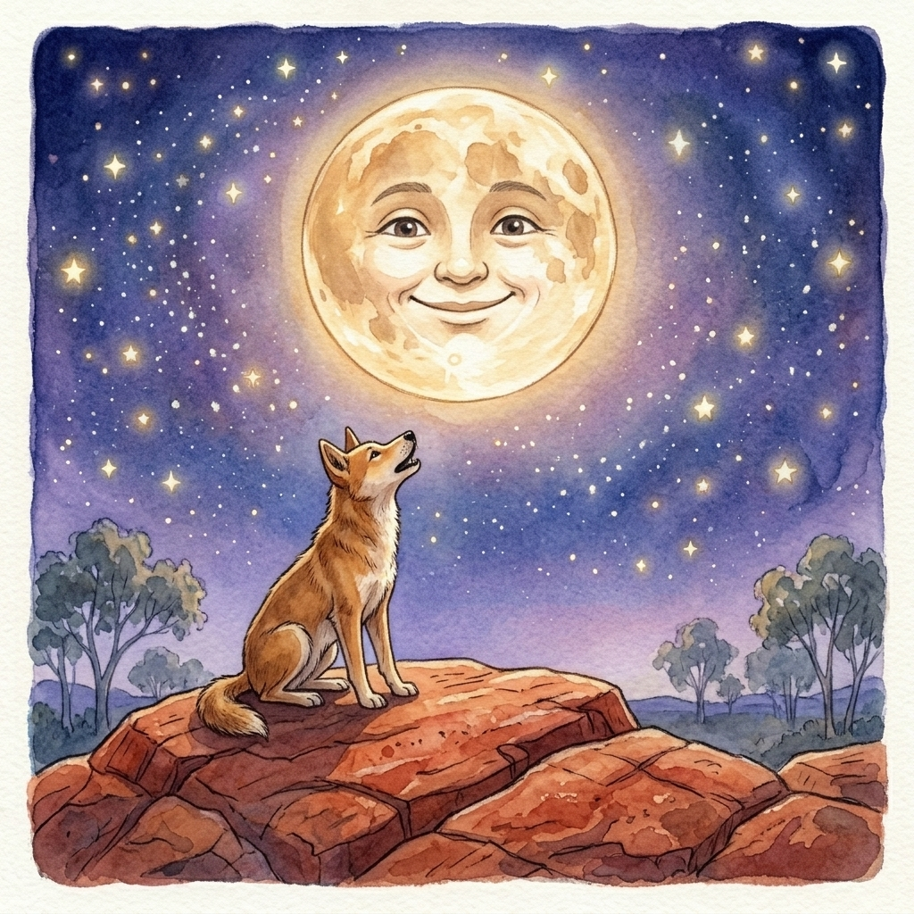

In the early days, when the world was still being settled into its ways, the Moon and the Dingo used to sit together and talk. Nobody had yet decided what would happen to living things when their time came to an end, and it was a question that weighed on them both.
One night the Moon, round and bright and in good spirits, said, “You know, I don’t worry about dying. I’ll be dead for three or four days, and then I’ll come back again!”
The Dingo lifted his head and frowned. “That is not how it will be for me,” he said. “When I die, I will die forever. I will lose myself and turn to bones and dust.”
“It doesn’t have to be that way,” said the Moon. “Whenever I die, I come back after four days. If you want to do the same, all you have to do is drink my pee.”
The Dingo wrinkled his nose and backed away. “Drink your pee? I won’t do it. That’s too dirty.”
“Think about it,” the Moon said gently. “It’s a small thing to ask.”
“I don’t need to think about it,” said the Dingo. “The answer is no.”
The Moon only shrugged. When the time came, he died, and the sky went dark and empty. The Dingo prowled the night, feeling quite sure of himself. But after several days, a thin silver curve appeared on the horizon, and then the Moon was back, singing and laughing, as fat and bright as ever.
Soon after, the Dingo’s own time came. He lay down, and he died. Then he tried to get up again. He tried and tried, struggling with all his strength to come back to life, but it was too late. He couldn’t do it, and he never would.
Ever since then, because of what the Dingo did that night, all the humans and animals of the earth have had to die forever, like the Dingo, instead of dying for a little while, like the Moon.

Adapted from a story told by Yarralin man Daly Pulkara to Deborah Bird Rose and reported in the book Dingo Makes Us Human: Life and Land in an Aboriginal Australian Culture.